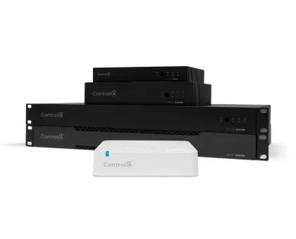
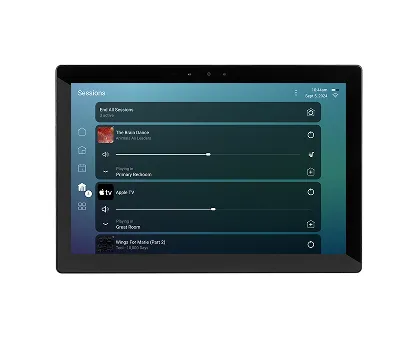
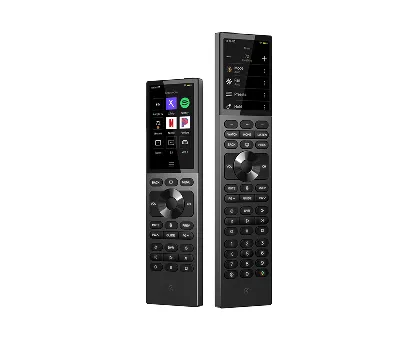

Kontrolery
Serce instalacji. Koordynują urządzenia, sceny, sieć, audio/wideo i integracje.
Platforma automatyki
Control4 to ekosystem automatyki, który spina wiele instalacji w jeden interfejs: światło, audio, kino, klimat, bezpieczeństwo, interkom, rolety i sceny. Największa wartość jest wtedy, gdy dom ma dużo urządzeń różnych producentów i ma działać jak jeden system.
Oficjalny katalog produktówControl4 opisuje aplikację jako zdalny dostęp do bezpieczeństwa, rozrywki, światła, komfortu i innych funkcji domu. W praktyce użytkownik widzi pokoje, sceny, multimedia, temperaturę, kamery, zamki i sterowanie oświetleniem w jednym układzie.
Ważne: użytkownik nie powinien zarządzać dziesięcioma aplikacjami. Integrator ma skonfigurować logikę tak, żeby codzienne akcje były proste: „kino”, „wyjście”, „noc”, „goście”, „sprzątanie”.


Serce instalacji. Koordynują urządzenia, sceny, sieć, audio/wideo i integracje.
Stałe panele na ścianie lub podstawce: szybkie sterowanie światłem, mediami i klimatem.

Wygodne sterowanie kinem, telewizją, muzyką, scenami i wybranymi funkcjami domu.
Telefon i tablet jako centralny panel do domu lokalnie oraz zdalnie.
Sterowanie salonem, kinem, muzyką i scenami bez szukania telefonu.
Panele ścienne/stojące do najważniejszych funkcji domu.
Procesory automatyki, które spinają AV, światło, klimat, bezpieczeństwo i sceny.
Control4 jest systemem profesjonalnym. Najważniejsze są projekt, konfiguracja i późniejszy serwis, a nie samo kupienie sprzętu.
Stabilna sieć LAN/Wi-Fi jest fundamentem. Przy większym domu trzeba planować szafy rack, VLAN-y, PoE i punkty dostępowe.
Dobrze zaprojektowany system ma mniej przycisków, ale lepszą logikę. Scena powinna sterować kilkoma instalacjami naraz.
Źródło grafik i opisów: oficjalny katalog Control4 oraz strona producenta. control4.com